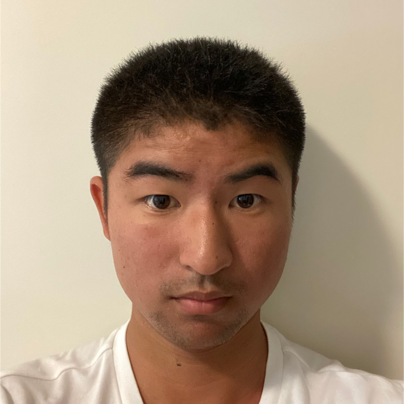

Hi there! I'm Andy Lin.
I'm a student at New York University (class of 2025) majoring in Computer Science and minoring in Integrated Design and Media and an alumni of Stuyvesant High School (class of 2022). I also develop a few apps for Apple platforms (such as iOS, iPadOS, macOS, watchOS, and visionOS), available on the Apple App Store. I typically program in Python and Swift, but, I also have experience programming in C, C#, C++, Java, Lua (including Roblox's Luau fork), and Rust. When I'm not busy doing coursework or developing my apps, I can be seen taking photographs of life's wonders or the wonderful places around the world, as well as rowing in the Hudson River.
Education History
New York University
Bachelors of Science in Computer Science and Integrated Design and Media
Courses Taken:
- CS-UY 1134 Data Structures and Algorithims
- CS-UY 2124 Object Oriented Programming
- CS-UY 2214 Computer Architecture
- CS-UY 3083 Introduction to Databases
- CS-UY 3314 Design and Implementation of Programming Languages
- DM-UY 1123 Visual Foundation Studio
- DM-UY 2193 Intro to Web Development
Stuyvesant High School
September 2018 - June 2022Stuyvesant High School Diploma
Including Advanced Regents DiplomaCourses Taken
- Software Development
- Systems Level Programming
- Computer Graphics
- Cybersecurity